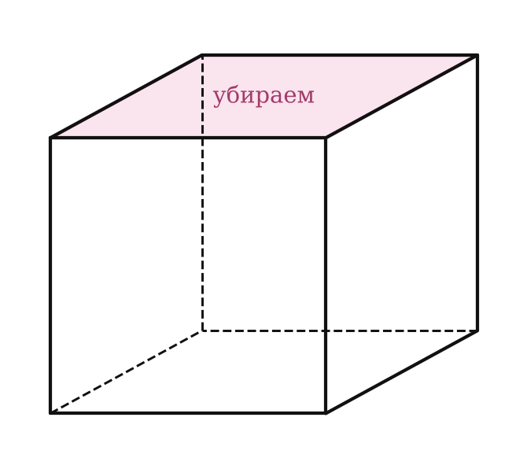

Теория
Что такое многогранник
В главах I и II ты уже работал с тетраэдром, параллелепипедом и кубом. У всех этих фигур есть общее: их поверхность «склеена» из плоских многоугольников. Такие фигуры и называются многогранниками. Теперь дадим им общее определение и научимся считать их элементы.
Многогранник — это поверхность, составленная из многоугольников и ограничивающая некоторое геометрическое тело. Тело, ограниченное этой поверхностью, тоже называют многогранником.
Многоугольники, из которых составлен многогранник, — его грани; стороны граней — рёбра; концы рёбер — вершины. Отрезок, соединяющий две вершины, которые не принадлежат одной грани, — диагональ многогранника.

Почему в определении диагонали важно «не в одной грани»? Отрезок A₁C₁ тоже соединяет две вершины, но он лежит в грани — это диагональ грани, а не многогранника. Диагональ многогранника всегда проходит внутри тела.
Многогранник называют по числу граней: тетраэдр (4 грани), гексаэдр (6 граней, например куб), октаэдр (8 граней) и т. д. Самые важные многогранники школьного курса — призма и пирамида; им посвящены два следующих урока.
Выпуклые и невыпуклые многогранники
Многогранник называется выпуклым, если он расположен по одну сторону от плоскости каждой своей грани.


Как проверить на практике: поставь многогранник на стол любой гранью. Если он всегда целиком лежит над столом и ни одна его часть не «проваливается» под стол, он выпуклый. Уголок на рисунке справа выпуклым не является: плоскость α его внутренней грани проходит сквозь тело.
1) Все грани выпуклого многогранника — выпуклые многоугольники.
2) Сумма всех плоских углов при каждой вершине выпуклого многогранника меньше 360°.
Второе свойство ты видел на прошлом уроке: при вершине выпуклого многогранника сходятся грани, образуя выпуклый многогранный угол, а сумма его плоских углов меньше 360°. Почему так: «разрежь» многогранный угол по одному ребру и разверни грани на стол. Если бы сумма углов была 360°, грани легли бы в плоскость без щели — «острия» у вершины не получилось бы. Например, при вершине куба: 90° + 90° + 90° = 270° < 360°.
Геометрическое тело
В определении многогранника мы сказали «ограничивает тело». Уточним, что такое тело. Для этого нужны два вида точек.

Точка фигуры называется внутренней, если существует шар с центром в этой точке, целиком принадлежащий фигуре.
Точка называется граничной точкой фигуры, если любой шар с центром в ней содержит как точки фигуры, так и точки, не принадлежащие ей. Все граничные точки образуют границу фигуры.
Геометрическим телом (просто телом) называется ограниченная фигура, у которой есть внутренние точки, любые две из них можно соединить линией, целиком состоящей из внутренних точек, и которая содержит все свои граничные точки. Граница тела — его поверхность.
По-простому: тело — это «кусок пространства» конечных размеров, «одним куском», вместе со своей «кожей». Кубик — тело, а два кубика, касающиеся только по ребру, — нет: точки разных кубиков нельзя соединить линией, идущей только по внутренним точкам. Плоскость — не тело (она не ограничена, и у неё нет внутренних точек).
Плоскость, по обе стороны от которой есть точки тела, называется секущей плоскостью, а фигура, по которой она пересекает тело, — сечением. Сечения многогранников ты строил в главе I.
Теорема Эйлера
Посчитаем у знакомых многогранников вершины В, рёбра Р и грани Г:
| Многогранник | В | Р | Г | В − Р + Г |
|---|---|---|---|---|
| тетраэдр | 4 | 6 | 4 | 2 |
| куб | 8 | 12 | 6 | 2 |
| треугольная призма | 6 | 9 | 5 | 2 |
| четырёхугольная пирамида | 5 | 8 | 5 | 2 |
| октаэдр | 6 | 12 | 8 | 2 |
Каждый раз получилось 2! Это не случайность, а теорема, которую в 1752 году опубликовал Леонард Эйлер.
Для любого выпуклого многогранника В − Р + Г = 2, где В — число вершин, Р — число рёбер, Г — число граней.


1. Убираем грань и растягиваем. Представь, что поверхность многогранника резиновая. Вырежем одну грань и растянем оставшуюся поверхность на плоскость (у выпуклого многогранника это можно сделать без разрывов и наложений). Получится плоская «сеть»: многоугольники, примыкающие друг к другу. Вершин и рёбер в ней столько же, сколько у многогранника, а многоугольников (областей) — Г − 1. Значит, нужно доказать, что для сети В − Р + (Г − 1) = 1.
2. Разбиваем на треугольники. В каждом многоугольнике сети, который не треугольник, проводим диагональ. Одна диагональ добавляет одно ребро и одну область: Р + 1 и (Г − 1) + 1 — величина В − Р + (Г − 1) не меняется. Повторяем, пока все области не станут треугольниками.
3. Снимаем треугольники с края по одному. Если у крайнего треугольника на краю сети одна сторона — убираем её: рёбер на 1 меньше и областей на 1 меньше, сумма не меняется. Если на краю две стороны — убираем их и их общую вершину: вершин −1, рёбер −2, областей −1, т. е. (−1) − (−2) + (−1) = 0 — снова без изменений.
4. Финал. В конце остаётся один треугольник: 3 − 3 + 1 = 1. Так как на всех шагах величина не менялась, у исходной сети тоже В − Р + (Г − 1) = 1, откуда В − Р + Г = 2. ∎
Зачем нужна теорема Эйлера? Она связывает три числа, поэтому по двум из них можно найти третье, не видя многогранника. А ещё с её помощью можно доказать, что каких-то многогранников не бывает (пример 3).
Ещё одно полезное соображение — подсчёт рёбер через грани: каждое ребро принадлежит ровно двум граням. Поэтому если сложить числа сторон всех граней, получится 2Р. Например, у многогранника, все грани которого — треугольники, 3Г = 2Р.
Не путай диагональ многогранника с диагональю грани: у куба диагоналей 4, а не 4 + 12. Отрезок AC в грани ABCD — это диагональ грани.
Теорема Эйлера сформулирована для выпуклых многогранников. Для многогранника «с дыркой» (например, рамки из брусков) В − Р + Г = 0 — равенство не выполняется.
Разбор примеров
Найди В, Р и Г у n-угольной призмы и n-угольной пирамиды и проверь теорему Эйлера.
Призма: два основания по n вершин — В = 2n; рёбра: по n в каждом основании и n боковых — Р = 3n; грани: n боковых и 2 основания — Г = n + 2. В − Р + Г = 2n − 3n + n + 2 = 2.
Пирамида: В = n + 1 (вершины основания и вершина пирамиды), Р = 2n (n в основании и n боковых), Г = n + 1. В − Р + Г = n + 1 − 2n + n + 1 = 2.
Все грани выпуклого многогранника — треугольники, вершин у него 6. Сколько у него рёбер и граней?
Каждая грань — треугольник, каждое ребро — сторона двух граней: 3Г = 2Р, Г = 2Р/3.
По теореме Эйлера 6 − Р + 2Р/3 = 2, откуда Р/3 = 4, Р = 12, Г = 8. Это октаэдр.
Докажи, что не существует выпуклого многогранника с 7 рёбрами.
У каждой грани не меньше 3 сторон, каждое ребро считается в двух гранях: 3Г ≤ 2Р = 14, значит Г ≤ 4. Из каждой вершины выходит не меньше 3 рёбер, каждое ребро соединяет две вершины: 3В ≤ 2Р = 14, значит В ≤ 4.
Тогда В + Г ≤ 8, а по теореме Эйлера В + Г = Р + 2 = 9. Противоречие — такого многогранника нет.
GeoGebra
- Cube((0,0,0),(2,0,0))
куб с ребром 2 — покрути его и пересчитай вершины, рёбра, грани - Octahedron((0,0,0),(2,0,0))
октаэдр: проверь, что В − Р + Г = 2 - Net(Cube((0,0,0),(2,0,0)), t)
развёртка куба; создай ползунок t от 0 до 1 — грани «раскрываются» на плоскость, как в доказательстве
Задачи урока
Реши в тетради, к каждой задаче — чертёж. Разберём на занятии.
Тест к уроку
Домашнее задание
Задачи Д1–Д6 ниже. Выучить определения многогранника, его элементов и выпуклого многогранника, формулировку теоремы Эйлера; уметь пересказать идею доказательства по шагам.